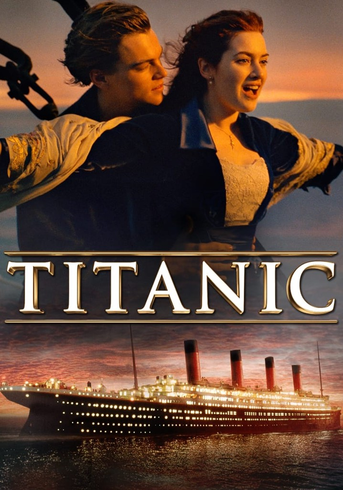

RMS Titanic, White Star Line şirketine ait Olympic sınıfı bir transatlantik yolcu gemisiydi. Harland and Wolff (Belfast, İrlanda) tersanelerinde üretilmiştir. 15 Nisan 1912 gecesi daha ilk seferinde bir buz dağına çarpmış ve yaklaşık iki saat kırk dakika içinde Kuzey Atlantik'in buzlu sularına gömülmüştür. 1912'de yapımı tamamlandığında dünyanın en büyük buharlı yolcu gemisiydi. Batışı 1.514 kişinin ölümüyle sonuçlanmış ve en büyük deniz felaketlerinden biri olarak tarihe geçmiştir. Titanic'in batışının yol açtığı büyük can kaybı oranı birçok nedene bağlanmaktaydı ama zamanla öne çıkan gerçek, geminin herkese yetecek kadar filika taşımıyor olmasıydı. Titanic'in tam kapasitesi 3,547 kişi olmasına rağmen gemideki filikaların toplam kapasitesi 1,178 kişiydi. Ayrıca kaza sırasında kadınlara ve çocuklara öncelik tanındığı için toplamda ölen erkek sayısı da çok orantısızdı.
